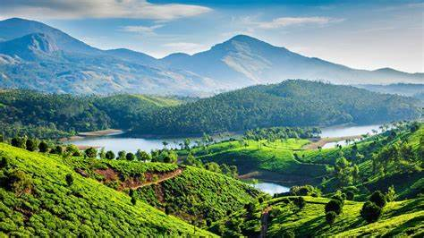
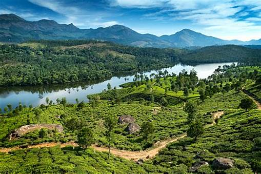

Description: Munnar, nestled in the Western Ghats of Kerala, is famous for its rolling tea plantations, mist-covered hills, and exotic wildlife. It’s a serene escape for nature lovers and adventure seekers alike.
Location: Idukki district, Kerala, India
Timings: Open all day
Best Time to Visit: September to March
Rating: ⭐⭐⭐⭐⭐ 4.6/5
Visitor Info:
Nearby Places: